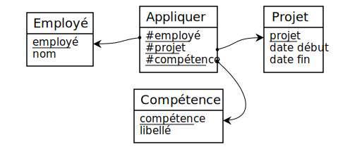

Conversion en relationnel
Générée par Mocodo
MCD triple_NNN
Appliquer (
#employé,
#projet,
#compétence
)
- Le champ employé fait partie de la clé primaire de la table. C'est une clé étrangère qui a migré directement à partir de l'entité Employé.
- Le champ projet fait partie de la clé primaire de la table. C'est une clé étrangère qui a migré directement à partir de l'entité Projet.
- Le champ compétence fait partie de la clé primaire de la table. C'est une clé étrangère qui a migré directement à partir de l'entité Compétence.
Compétence (
compétence,
libellé
)
- Le champ compétence constitue la clé primaire de la table. C'était déjà un identifiant de l'entité Compétence.
- Le champ libellé était déjà un simple attribut de l'entité Compétence.
Employé (
employé,
nom
)
- Le champ employé constitue la clé primaire de la table. C'était déjà un identifiant de l'entité Employé.
- Le champ nom était déjà un simple attribut de l'entité Employé.
Projet (
projet,
date début,
date fin
)
- Le champ projet constitue la clé primaire de la table. C'était déjà un identifiant de l'entité Projet.
- Les champs date début et date fin étaient déjà de simples attributs de l'entité Projet.